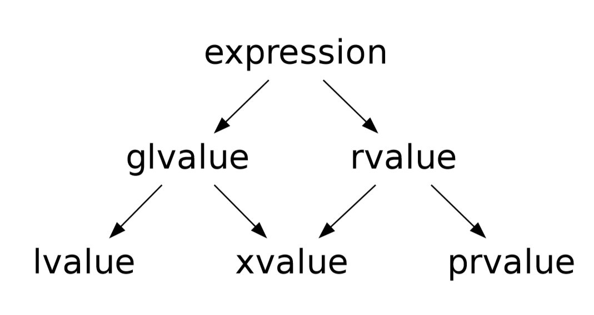

<!DOCTYPE html>
<html>
<head><meta name="generator" content="Hexo 3.9.0">
  <meta charset="utf-8">
  <meta http-equiv="X-UA-Compatible" content="IE=edge">
  
  <title>对C++左值和右值的理解 | uint128&#39;s Blog</title>
  <meta name="description" content>
  <meta name="keywords" content>
  <meta name="HandheldFriendly" content="True">
  <meta name="apple-mobile-web-app-capable" content="yes">
  <link rel="shortcut icon" href="/">
  <link rel="alternate" href="/atom.xml" title="uint128's Blog">
  <meta name="viewport" content="width=device-width, initial-scale=1, maximum-scale=1">
  <meta name="description" content="对C++左值和右值的理解">
<meta name="keywords" content="C++">
<meta property="og:type" content="article">
<meta property="og:title" content="对C++左值和右值的理解">
<meta property="og:url" content="https://uint128.com/2020/01/17/对C-左值和右值的理解/index.html">
<meta property="og:site_name" content="uint128&#39;s Blog">
<meta property="og:description" content="对C++左值和右值的理解">
<meta property="og:locale" content="zh-cn">
<meta property="og:image" content="https://uint128.com/2020/01/17/对C-左值和右值的理解/img-1.png">
<meta property="og:updated_time" content="2020-01-17T17:06:37.404Z">
<meta name="twitter:card" content="summary">
<meta name="twitter:title" content="对C++左值和右值的理解">
<meta name="twitter:description" content="对C++左值和右值的理解">
<meta name="twitter:image" content="https://uint128.com/2020/01/17/对C-左值和右值的理解/img-1.png">
    
  <link href="https://fonts.googleapis.com/css?family=Inconsolata|Titillium+Web" rel="stylesheet">
  <link href="https://fonts.googleapis.com/css?family=Roboto+Mono" rel="stylesheet">
  <link href="//cdn.bootcss.com/node-waves/0.7.5/waves.min.css" rel="stylesheet">
  <link rel="stylesheet" href="/style.css">
  <script>
    function setLoadingBarProgress(num) {
      document.getElementById('loading-bar').style.width=num+"%";
    }
  </script>
  <script src="/js/md5.js"></script>
<link rel="alternate" href="/atom.xml" title="uint128's Blog" type="application/atom+xml">
</head>
</html>
<body>
  <div id="loading-bar-wrapper">
  <div id="loading-bar"></div>
</div>


  <script>setLoadingBarProgress(20)</script> 
  <header class="l_header">
	<div class='wrapper'>
		<div class="nav-main container container--flex">
			<a class="logo flat-box" href='/' >
				uint128's Blog
			</a>
			<div class='menu'>
				<ul class='h-list'>
					
						<li>
							<a class='flat-box nav-home' href='/'>
								Home
							</a>
						</li>
					
						<li>
							<a class='flat-box nav-archives' href='/archives'>
								Archives
							</a>
						</li>
					
						<li>
							<a class='flat-box nav-about' href='/about'>
								About
							</a>
						</li>
					
				</ul>
				<div class='underline'></div>
			</div>
			
				<div class="m_search">
					<form name="searchform" class="form u-search-form">
						<input type="text" class="input u-search-input" placeholder="Search" />
						<span class="icon icon-search"></span>
					</form>
				</div>
			
			<ul class='switcher h-list'>
				
					<li class='s-search'><a href='javascript:void(0)'><span class="icon icon-search flat-box"></span></a></li>
				
				<li class='s-menu'><a href='javascript:void(0)'><span class="icon icon-menu flat-box"></span></a></li>
			</ul>
		</div>
		
		<div class='nav-sub container container--flex'>
			<a class="logo" class="flat-box" href='javascript:void(0)'>
				Word of Forks
			</a>

			<ul class='switcher h-list'>
				<li class='s-comment'><a href='javascript:void(0)'><span class="icon icon-chat_bubble_outline flat-box"></span></a></li>
				<li class='s-top'><a href='javascript:void(0)'><span class="icon icon-arrow_upward flat-box"></span></a></li>
				<li class='s-toc'><a href='javascript:void(0)'><span class="icon icon-format_list_numbered flat-box"></span></a></li>
			</ul>
		</div>
	</div>
</header>
<aside class="menu-phone">
	<nav>
		
			<a href="/" class="nav-home nav">
				Home
			</a>
		
			<a href="/archives" class="nav-archives nav">
				Archives
			</a>
		
			<a href="/about" class="nav-about nav">
				About
			</a>
		
	</nav>
</aside>

    <script>setLoadingBarProgress(40);</script>
  <div class="l_body">
    <div class='container clearfix'>
      <div class='l_main'>
        <article id="post-对C-左值和右值的理解"
  class="post white-box article-type-post"
  itemscope itemprop="blogPost">
	<section class='meta'>
	<h2 class="title">
  	<a href="/2020/01/17/对C-左值和右值的理解/">
    	对C++左值和右值的理解
    </a>
  </h2>
	<time>
	  1月 17, 2020
	</time>
	
	</section>
	
		<section class="toc-wrapper"><ol class="toc"><li class="toc-item toc-level-1"><a class="toc-link" href="#左值和右值的定义"><span class="toc-number">1.</span> <span class="toc-text">左值和右值的定义</span></a><ol class="toc-child"><li class="toc-item toc-level-2"><a class="toc-link" href="#C-03标准中的左值和右值"><span class="toc-number">1.1.</span> <span class="toc-text">C++03标准中的左值和右值</span></a></li><li class="toc-item toc-level-2"><a class="toc-link" href="#C-11标准中的左值和右值"><span class="toc-number">1.2.</span> <span class="toc-text">C++11标准中的左值和右值</span></a></li></ol></li><li class="toc-item toc-level-1"><a class="toc-link" href="#左值与右值之间的转换"><span class="toc-number">2.</span> <span class="toc-text">左值与右值之间的转换</span></a></li><li class="toc-item toc-level-1"><a class="toc-link" href="#CV限定下的左值和右值"><span class="toc-number">3.</span> <span class="toc-text">CV限定下的左值和右值</span></a></li><li class="toc-item toc-level-1"><a class="toc-link" href="#右值引用与移动语义"><span class="toc-number">4.</span> <span class="toc-text">右值引用与移动语义</span></a></li><li class="toc-item toc-level-1"><a class="toc-link" href="#参考文献"><span class="toc-number">5.</span> <span class="toc-text">参考文献</span></a></li></ol></section>
	
	<section class="article typo">
  	<div class="article-entry" itemprop="articleBody">
    	<p>对C++左值和右值的理解</p>
<a id="more"></a>

<h1 id="左值和右值的定义"><a href="#左值和右值的定义" class="headerlink" title="左值和右值的定义"></a>左值和右值的定义</h1><h2 id="C-03标准中的左值和右值"><a href="#C-03标准中的左值和右值" class="headerlink" title="C++03标准中的左值和右值"></a>C++03标准中的左值和右值</h2><p>&emsp;&emsp;左值 (lvalue) 和右值 (rvalue) 中的“左”和“右”其实就是左手右手中的“左”和“右”。因为最初产生这个概念的时候，左值总是出现在赋值符号的左边，右值总是出现在赋值符号的右边。在C++03标准中，左值和右值是这样定义的：</p>
<blockquote>
<p>1.Every expression is either an lvalue or an rvalue.<br>2.An lvalue refers to an object or function.<br>……<br>5.The result of calling a function that does not return a reference is an rvalue. User defined operators are functions, and whether such operators expect or yield lvalues is determined by their parameter and return types. </p>
</blockquote>
<p>&emsp;&emsp;即：对于每一个表达式，它要么是左值要么是右值。左值指向一个对象或函数。函数的返回值如果不是个引用，那么是个右值。用户定义的运算符是函数，此类运算符是期望值还是产生左值取决于其参数和返回类型。</p>
<p>&emsp;&emsp;左值是一个对象，这个对象占据了内存中的空间，并且可以取得地址。而如果一个表达式它不是左值，那么就认为这个表达式是一个右值。</p>
<p>&emsp;&emsp;借助代码也许会更好理解。</p>
<figure class="highlight c++"><table><tr><td class="gutter"><pre><span class="line">1</span><br><span class="line">2</span><br><span class="line">3</span><br><span class="line">4</span><br><span class="line">5</span><br></pre></td><td class="code"><pre><span class="line"><span class="keyword">int</span> a;</span><br><span class="line">a = (<span class="number">9</span> + <span class="number">1</span>);</span><br><span class="line"><span class="keyword">int</span> *pa = &amp;a;</span><br><span class="line">(<span class="number">9</span> + <span class="number">1</span>) = a;            <span class="comment">// 这一句代码是错误的，MSVC会提示：“表达式必须是可修改的左值”。</span></span><br><span class="line"><span class="keyword">int</span> *pb = &amp;(<span class="number">9</span> + <span class="number">1</span>);     <span class="comment">// 这一句代码是错误的，MSVC会提示：“表达式必须为左值或函数指示符”。</span></span><br></pre></td></tr></table></figure>

<p>&emsp;&emsp;上面的代码中，变量a显然是一个左值，它可以出现在赋值符号的左边，也可以取得它的地址。而对于表达式 “(9 + 1)” 来说，它是一个临时的计算结果，它完全可能不存在于内存中（比如存在于某个临时寄存器中），也就是没有一个确定的内存地址，因此这个表达式不是一个左值，而是一个右值。只能给左值赋值，因为对一个不存在的内存赋值，是没有意义的。同样的道理，只能对左值取地址，因为对一个不存在地址的表达式取地址，是没有意义的。</p>
<p>&emsp;&emsp;前面提到在以前左值总是出现在赋值符号的左边，右值总是出现在赋值符号的右边。现在这个说法已经不那么准确，接下来谈谈两种特殊的情况。</p>
<p>&emsp;&emsp;左值未必能放在等号左边。考虑下面这段代码：</p>
<figure class="highlight c++"><table><tr><td class="gutter"><pre><span class="line">1</span><br><span class="line">2</span><br></pre></td><td class="code"><pre><span class="line"><span class="keyword">const</span> <span class="keyword">int</span> a = <span class="number">10</span>;   <span class="comment">// a是一个左值</span></span><br><span class="line">a = <span class="number">100</span>;            <span class="comment">// 错误！a不能放在等号左边！</span></span><br></pre></td></tr></table></figure>

<p>&emsp;&emsp;变量a显然是个左值，但是因为它被 const 修饰，不可被修改，所以变量a不能出现在赋值符号的左边。对于可以修改的左值，一般称为 <strong>“可修改左值”</strong>。</p>
<p>&emsp;&emsp;等号的左边未必是左值。考虑下面这一段代码：</p>
<figure class="highlight c++"><table><tr><td class="gutter"><pre><span class="line">1</span><br><span class="line">2</span><br><span class="line">3</span><br><span class="line">4</span><br><span class="line">5</span><br><span class="line">6</span><br><span class="line">7</span><br><span class="line">8</span><br><span class="line">9</span><br><span class="line">10</span><br><span class="line">11</span><br><span class="line">12</span><br><span class="line">13</span><br><span class="line">14</span><br><span class="line">15</span><br><span class="line">16</span><br><span class="line">17</span><br><span class="line">18</span><br><span class="line">19</span><br><span class="line">20</span><br><span class="line">21</span><br><span class="line">22</span><br><span class="line">23</span><br><span class="line">24</span><br><span class="line">25</span><br></pre></td><td class="code"><pre><span class="line"><span class="class"><span class="keyword">class</span> <span class="title">A</span></span></span><br><span class="line"><span class="class">&#123;</span></span><br><span class="line"><span class="keyword">public</span>:</span><br><span class="line">    A() = <span class="keyword">default</span>;</span><br><span class="line">    A&amp; <span class="keyword">operator</span>=(<span class="keyword">int</span>)</span><br><span class="line">    &#123;</span><br><span class="line">        <span class="keyword">return</span> *<span class="keyword">this</span>;</span><br><span class="line">    &#125;</span><br><span class="line">&#125;;</span><br><span class="line"><span class="function">A <span class="title">func1</span><span class="params">()</span></span></span><br><span class="line"><span class="function"></span>&#123;</span><br><span class="line">    <span class="keyword">return</span> A();</span><br><span class="line">&#125;</span><br><span class="line"></span><br><span class="line"><span class="function"><span class="keyword">int</span> <span class="title">func2</span><span class="params">()</span></span></span><br><span class="line"><span class="function"></span>&#123;</span><br><span class="line">    <span class="keyword">return</span> <span class="number">123</span>;</span><br><span class="line">&#125;</span><br><span class="line"></span><br><span class="line"><span class="function"><span class="keyword">int</span> <span class="title">main</span><span class="params">()</span></span></span><br><span class="line"><span class="function"></span>&#123;</span><br><span class="line">    func1() = <span class="number">5321</span>; <span class="comment">// 语句1 可以运行，因为这一句代码相当于 func1().operator=(5321); </span></span><br><span class="line">    func2() = <span class="number">4321</span>; <span class="comment">// 语句2 错误，MSVC会提示：“表达式必须是可修改的左值”</span></span><br><span class="line">	<span class="keyword">return</span> <span class="number">0</span>;</span><br><span class="line">&#125;</span><br></pre></td></tr></table></figure>

<p>&emsp;&emsp;从定义来看，函数 func1 和 func2 的返回值不是引用，所以是右值。而对一个右值赋值是无意义的，所以“语句 2”是错误的。但是因为 func1 返回的是类型A，这个类型重载了自己的赋值操作符。因此对它的赋值操作实际上等同于执行了成员函数 “operator=”，所以“语句 1”是可以运行的。</p>
<h2 id="C-11标准中的左值和右值"><a href="#C-11标准中的左值和右值" class="headerlink" title="C++11标准中的左值和右值"></a>C++11标准中的左值和右值</h2><p>&emsp;&emsp;C++11标准中的左值和右值明显复杂了许多。在C++11标准中，表达式可以分为广义左值 (glvalue, generalized lvalue)和右值(rvalue)。广义左值又可分为左值(lvalue)和消亡值(xvalue, eXpiring value)。右值又可分为消亡值(这里没有打错，它既是广义左值也是右值)和纯右值(prvalue, pure rvalue)。下面这幅图直观地说明了它们之间的关系。</p>
<p></p>
<p>&emsp;&emsp;C++11标准中对它们的定义是：</p>
<blockquote>
<p>1.An lvalue (so called, historically, because lvalues could appear on the left-hand side of an assignment expression) designates a function or an object.<br>2.An xvalue (an “eXpiring” value) also refers to an object, usually near the end of its lifetime (so that its resources may be moved, for example). An xvalue is the result of certain kinds of expressions involving rvalue references (8.3.2). [Example: The result of calling a function whose return type is an rvalue reference is an xvalue. —end example]<br>3.A glvalue (“generalized” lvalue) is an lvalue or an xvalue.<br>4.An rvalue (so called, historically, because rvalues could appear on the right-hand side of anassignment expression) is an xvalue, a temporary object(12.2) or subobject thereof, or a value that is not associated with an object.<br>5.A prvalue (“pure” rvalue) is an rvalue that is not an xvalue. [Example: The result of calling a function whose return type is not a reference is a prvalue. The value of a literal such as 12, 7.3e5, or true is also a prvalue. —end example]</p>
</blockquote>
<p>&emsp;&emsp;C++11中左值(lvalue)的定义和C++03中的左值定义差不多。纯右值的定义依然是用“排除法”的方式定义，即：“不是消亡值就是纯右值”，关键在于这个消亡值(xvalue)。</p>
<p>&emsp;&emsp;按照定义的意思，消亡值也指向了一个对象，因为这个对象通常接近它生命周期的末期(也就是即将被销毁)，所以把它叫做消亡值。很好理解为什么消亡值是“广义上的左值”，其实就因为它指向了一个对象。</p>
<p>&emsp;&emsp;纯右值和C++03的右值很相似，比如字面值(如12, 3.14f, true)、函数的返回值(不是引用)都是纯右值。需要注意的是，C++规定字符串(const char*)是左值，而不是右值，虽然字符串也是字面值。(对此我的理解是:字符串是可以取得地址的，因此它至少是个“广义上的左值”)</p>
<h1 id="左值与右值之间的转换"><a href="#左值与右值之间的转换" class="headerlink" title="左值与右值之间的转换"></a>左值与右值之间的转换</h1><p>&emsp;&emsp;如果某个表达式期待一个右值，但是却给了一个左值，那么这个左值会被转换成右值。考虑下面这一段代码：</p>
<figure class="highlight c++"><table><tr><td class="gutter"><pre><span class="line">1</span><br><span class="line">2</span><br><span class="line">3</span><br></pre></td><td class="code"><pre><span class="line"><span class="keyword">int</span> a = <span class="number">9</span>;       <span class="comment">// 变量a是一个左值</span></span><br><span class="line"><span class="keyword">int</span> b = <span class="number">1</span>;       <span class="comment">// 变量b是一个左值</span></span><br><span class="line"><span class="keyword">int</span> c = a + b;   <span class="comment">// 加法运算需要一个右值，左值b被转换成右值</span></span><br></pre></td></tr></table></figure>

<p>&emsp;&emsp;正如注释中所述，变量a和变量b都是左值，而加法运算需要一个右值，所以变量b会被隐式地转换成右值。<br>&emsp;&emsp;但是这可不意味着可以反过来把右值转换成左值，这就不符合左值的定义了。但右值转换成左值也不总是不成立，考虑下面这一段代码。</p>
<figure class="highlight c++"><table><tr><td class="gutter"><pre><span class="line">1</span><br><span class="line">2</span><br><span class="line">3</span><br></pre></td><td class="code"><pre><span class="line"><span class="keyword">int</span> arr[] = &#123;<span class="number">1</span>, <span class="number">2</span>&#125;;</span><br><span class="line"><span class="keyword">int</span>* p = &amp;arr[<span class="number">0</span>];</span><br><span class="line">*(p + <span class="number">1</span>) = <span class="number">10</span>;      <span class="comment">// 行得通，(p + 1)是右值，但是*(p + 1)是左值</span></span><br></pre></td></tr></table></figure>

<p>&emsp;&emsp;这一段代码中，<strong>(p + 1)</strong> 计算的结果是一个临时值，但是操作符 <strong>*</strong> 可以使 <strong>(p + 1)</strong> 变为左值，所以 <strong>*(p + 1)</strong> 可以出现在赋值符号的左侧。<br>&emsp;&emsp;反过来，操作符 <strong>&amp;</strong> 则可以将左值转换成右值。</p>
<figure class="highlight c++"><table><tr><td class="gutter"><pre><span class="line">1</span><br><span class="line">2</span><br><span class="line">3</span><br><span class="line">4</span><br></pre></td><td class="code"><pre><span class="line"><span class="keyword">int</span> var = <span class="number">10</span>;</span><br><span class="line"><span class="keyword">int</span>* bad_addr = &amp;(var + <span class="number">1</span>);     <span class="comment">// 错误：&amp; 操作符需要一个左值</span></span><br><span class="line"><span class="keyword">int</span>* addr = &amp;var;               <span class="comment">// 可行：var是一个左值</span></span><br><span class="line">&amp;var = <span class="number">40</span>;                      <span class="comment">// 错误：赋值符号左侧需要一个左值</span></span><br></pre></td></tr></table></figure>

<p>&emsp;&emsp;符号 <strong>&amp;</strong> 的另一个作用是定义 <strong>“左值引用”</strong>，下面一段代码定义了一个左值引用。</p>
<figure class="highlight c++"><table><tr><td class="gutter"><pre><span class="line">1</span><br><span class="line">2</span><br></pre></td><td class="code"><pre><span class="line"><span class="keyword">int</span> a = <span class="number">123</span>;</span><br><span class="line"><span class="keyword">int</span>&amp; b = a;</span><br></pre></td></tr></table></figure>

<p>&emsp;&emsp;在上面这一段代码中，变量a是一个左值，而变量b是a的 <strong>“左值引用”</strong>。不能给 <strong>非常量左值引用</strong> 赋予一个右值，因为这会产生从右值到左值的转换。但是 <strong>常量左值引用</strong> 则可以被赋予右值。</p>
<figure class="highlight c++"><table><tr><td class="gutter"><pre><span class="line">1</span><br><span class="line">2</span><br><span class="line">3</span><br><span class="line">4</span><br><span class="line">5</span><br><span class="line">6</span><br><span class="line">7</span><br></pre></td><td class="code"><pre><span class="line"><span class="built_in">string</span>&amp; str1 = <span class="built_in">string</span>();        <span class="comment">// 错误:不能给“非常量左值引用”赋予右值</span></span><br><span class="line"><span class="keyword">const</span> <span class="built_in">string</span>&amp; str2 = <span class="built_in">string</span>();  <span class="comment">// 可行：可以给常量左值引用赋予右值</span></span><br><span class="line"></span><br><span class="line"><span class="function"><span class="keyword">void</span> <span class="title">func</span><span class="params">(<span class="keyword">const</span> <span class="built_in">string</span>&amp; str)</span></span>;   <span class="comment">// 函数func的参数类型是“常量左值引用”</span></span><br><span class="line"><span class="built_in">string</span> str = <span class="string">"Hello"</span>;</span><br><span class="line">func(str);                      <span class="comment">// 可行，可以把左值赋值给“常量左值引用”</span></span><br><span class="line">func(<span class="built_in">string</span>(<span class="string">"Hi!"</span>));            <span class="comment">// 可行，虽然string("Hi!")是右值，但是也可以赋值给“常量左值引用”</span></span><br></pre></td></tr></table></figure>

<p>&emsp;&emsp;上面这段代码演示了C++中一个很常见的优化方法，即按引用传参。从左值和右值的角度来看，这样做之所以行得通是因为左值和右值都可以赋值给“常量左值引用”。</p>
<h1 id="CV限定下的左值和右值"><a href="#CV限定下的左值和右值" class="headerlink" title="CV限定下的左值和右值"></a>CV限定下的左值和右值</h1><p>&emsp;&emsp;CV限定(cv-qualified) 这个术语指的是 <strong>const</strong> 和 <strong>volatile</strong> 两个类型限定符。按照C++中的定义，每一个没有被 <strong>const</strong> 和 <strong>volatile</strong> 的完成类型、未完成类型和 void 类型都有相应的三个 <strong>CV限定</strong> 版本的类型。举个例子，<strong>int</strong> 这个类型有三个 <strong>CV限定</strong> 版本的类型，分别是 <strong>const int</strong>、<strong>volatile int</strong> 和 <strong>const volatile int</strong>。<br>&emsp;&emsp;在C语言里，只有左值有CV类型限定符而右值不会有。在C++中，<strong>类的右值</strong> 可以有CV限定，但是内建类型(比如 int)没有。考虑下面这个例子：</p>
<figure class="highlight c++"><table><tr><td class="gutter"><pre><span class="line">1</span><br><span class="line">2</span><br><span class="line">3</span><br><span class="line">4</span><br><span class="line">5</span><br><span class="line">6</span><br><span class="line">7</span><br><span class="line">8</span><br><span class="line">9</span><br><span class="line">10</span><br><span class="line">11</span><br><span class="line">12</span><br><span class="line">13</span><br><span class="line">14</span><br><span class="line">15</span><br><span class="line">16</span><br></pre></td><td class="code"><pre><span class="line"><span class="comment">// 这里的代码直接使用了参考文献[3]中的代码</span></span><br><span class="line"><span class="class"><span class="keyword">class</span> <span class="title">A</span></span></span><br><span class="line"><span class="class">&#123;</span></span><br><span class="line"><span class="keyword">public</span>:</span><br><span class="line">    <span class="function"><span class="keyword">void</span> <span class="title">foo</span><span class="params">()</span> <span class="keyword">const</span> </span>&#123; <span class="built_in">cout</span> &lt;&lt; <span class="string">"A::foo() const\n"</span>; &#125;</span><br><span class="line">    <span class="function"><span class="keyword">void</span> <span class="title">foo</span><span class="params">()</span> </span>&#123; <span class="built_in">cout</span> &lt;&lt; <span class="string">"A::foo()\n"</span>; &#125;</span><br><span class="line">&#125;;</span><br><span class="line"></span><br><span class="line"><span class="function">A <span class="title">bar</span><span class="params">()</span> </span>&#123; <span class="keyword">return</span> A(); &#125;</span><br><span class="line"><span class="function"><span class="keyword">const</span> A <span class="title">cbar</span><span class="params">()</span> </span>&#123; <span class="keyword">return</span> A(); &#125;</span><br><span class="line"></span><br><span class="line"><span class="function"><span class="keyword">int</span> <span class="title">main</span><span class="params">()</span></span></span><br><span class="line"><span class="function"></span>&#123;</span><br><span class="line">    bar().foo();  <span class="comment">// 调用 foo</span></span><br><span class="line">    cbar().foo(); <span class="comment">// 调用 foo const</span></span><br><span class="line">&#125;</span><br></pre></td></tr></table></figure>

<p>&emsp;&emsp;在 <strong>main</strong> 函数中 对 <strong>foo</strong> 函数的第二次调用，实际上调用的是 <strong>A类</strong> 中的 <strong>void foo() const</strong>方法。因为函数 <strong>cbar</strong> 返回的是 <strong>const A</strong>。<strong>const A</strong> 和 <strong>A</strong> 不是同一个类型。</p>
<h1 id="右值引用与移动语义"><a href="#右值引用与移动语义" class="headerlink" title="右值引用与移动语义"></a>右值引用与移动语义</h1><p>&emsp;&emsp;右值引用就是对右值的引用，这个特性在C++11标准中引入。符号 <strong>&amp;</strong> 可以声明 <strong>左值引用</strong>，对于右值引用则使用符号 <strong>&amp;&amp;</strong> 声明。<br>&emsp;&emsp;加入右值引用的特性是为了实现 <strong>移动语义(move semantic)</strong> 和 <strong>精确转发(perfect forwarding)</strong>。这一节只简单地谈一下移动语义。(因为我也只是懂得那么点)<br>&emsp;&emsp;要理解 <strong>移动语义</strong> 这个概念，最好还是结合一个实际的例子。考虑需要实现一个边长数组的类(类似std::vector)。<br>在实现赋值语句操作符的时候，可能会有这种实现：</p>
<figure class="highlight c++"><table><tr><td class="gutter"><pre><span class="line">1</span><br><span class="line">2</span><br><span class="line">3</span><br><span class="line">4</span><br><span class="line">5</span><br><span class="line">6</span><br><span class="line">7</span><br><span class="line">8</span><br></pre></td><td class="code"><pre><span class="line"><span class="comment">// 这里的代码直接使用了参考文献[3]中的代码</span></span><br><span class="line">Intvec&amp; <span class="keyword">operator</span>=(<span class="keyword">const</span> Intvec&amp; other)</span><br><span class="line">&#123;</span><br><span class="line">    Intvec tmp(other);</span><br><span class="line">    <span class="built_in">std</span>::swap(m_size, tmp.m_size);</span><br><span class="line">    <span class="built_in">std</span>::swap(m_data, tmp.m_data);</span><br><span class="line">    <span class="keyword">return</span> *<span class="keyword">this</span>;</span><br><span class="line">&#125;</span><br></pre></td></tr></table></figure>

<p>&emsp;&emsp;这个实现对传入的 <strong>other</strong> 对象做了一个完全的拷贝，也就是创造了个副本 <strong>tmp</strong>。然后，将自己的成员变量和副本 <strong>tmp</strong> 交换。在这个函数结束的时候，自己原本的数据随着 <strong>tmp</strong> 的析构而销毁，并拥有了和 <strong>other</strong> 对象完全一样的新数据。使用它的代码如下：</p>
<figure class="highlight c++"><table><tr><td class="gutter"><pre><span class="line">1</span><br><span class="line">2</span><br><span class="line">3</span><br><span class="line">4</span><br><span class="line">5</span><br></pre></td><td class="code"><pre><span class="line"><span class="function">Intvec <span class="title">v1</span><span class="params">(<span class="number">20</span>)</span></span>;</span><br><span class="line">Intvec v2;</span><br><span class="line"></span><br><span class="line">v2 = v1;            <span class="comment">// 语句1 : 给v2赋值一个左值</span></span><br><span class="line">v2 = Intvec(<span class="number">30</span>);    <span class="comment">// 语句2 : 给v2赋值一个右值</span></span><br></pre></td></tr></table></figure>

<p>&emsp;&emsp;对于 <strong>语句1</strong> 可以认为是确实需要一个和v1一模一样的副本，所以上面的代码完全没有问题。但是对于 <strong>语句2</strong>，也就是把一个右值赋值给v2，会发生什么？<br>&emsp;&emsp;首先 <strong>Intvec(30)</strong> 这个表达式会调用 <strong>Intvec</strong> 类的构造函数，创造一个 <strong>Intvec</strong> 对象，为了方便说明，可以称他为 <strong>临时对象1</strong>。<br>&emsp;&emsp;然后，调用 <strong>v2.operator=(const Intvec&amp; other)</strong>，把 <strong>临时对象1</strong> 传递进去。(虽然这个函数的参数要求是 <strong>常量左值引用</strong> 而 <strong>临时对象1</strong> 是个右值，但是上文已经说明这样做是合法的，这里没有问题。)<br>&emsp;&emsp;之后，这个函数(<strong>v2.operator=</strong>)对传入的参数 <strong>other</strong>，做了一个完全的复制，得到 <strong>临时对象2</strong> ，也就是副本 <strong>tmp</strong>。<br>&emsp;&emsp;到这里我想可以停止说明了。这短短一行代码，居然创建了两个临时对象！然而这真的有必要吗？考虑加入下面这个代码：</p>
<figure class="highlight c++"><table><tr><td class="gutter"><pre><span class="line">1</span><br><span class="line">2</span><br><span class="line">3</span><br><span class="line">4</span><br><span class="line">5</span><br><span class="line">6</span><br><span class="line">7</span><br></pre></td><td class="code"><pre><span class="line"><span class="comment">// 这里的代码直接使用了参考文献[3]中的代码</span></span><br><span class="line">Intvec&amp; <span class="keyword">operator</span>=(Intvec&amp;&amp; other)&#123;</span><br><span class="line">    <span class="built_in">log</span>(<span class="string">"move assignment operator"</span>);</span><br><span class="line">    <span class="built_in">std</span>::swap(m_size, other.m_size);</span><br><span class="line">    <span class="built_in">std</span>::swap(m_data, other.m_data);</span><br><span class="line">    <span class="keyword">return</span> *<span class="keyword">this</span>;</span><br><span class="line">&#125;</span><br></pre></td></tr></table></figure>

<p>&emsp;&emsp;这里的赋值语句操作符的参数和上一个有所不同。这里的参数类型是一个 <strong>右值引用</strong>，而上一个是 <strong>常量左值引用</strong>。区别在于，当编译器检测到参数是右值是，编译器会调用这个参数为 <strong>右值引用</strong> 版本的赋值语句操作符函数，而不是上一个版本的函数。也就是说，上面用例中的 <strong>语句2</strong> 将会调用这个新的 <strong>Intvec&amp; operator=(Intvec&amp;&amp; other)</strong> 函数(语句1没有变化，因为语句1的参数v1是个左值)。<br>&emsp;&emsp;另一个主要区别是，这个版本的函数没有了创造副本 <strong>tmp</strong> 的过程。这是因为副本 <strong>tmp</strong> 的使命只有两个：1.将other完全复制一份 2.在析构的时候把旧的数据给销毁。副本 <strong>tmp</strong> 能够做到第二个使命是因为它是一个临时变量，在函数结束的时候就会被析构，所以它是“濒临死期”。而传入参数的右值也是如此。在语句2(<strong>“v2 = Intvec(30);”</strong>)执行完后，这个 <strong>临时对象1</strong> 就会被析构，它也是“濒临死期”。还记得上文讲到的“消亡值”吗，消亡值指的就是即将消亡的值，实际上这里的other参数就是个消亡值。<br>&emsp;&emsp;利用这一点，就没有必要再创造一个副本 <strong>tmp</strong> 。<strong>临时对象1</strong> 拥有需要的新数据，同时它又即将消亡，能够代替副本 <strong>tmp</strong> 完成那两个使命。所以直接和 <strong>临时对象1</strong> 交换新旧数据就可以了，而不需要一个副本 <strong>tmp</strong> 作为中介。为了能够修改右值，C++11引入了右值引用。将旧数据移动到右值中，将右值中的数据移动给自己，使用“移动数据”代替“复制数据”，这就称为“移动语义”。(个人理解)</p>
<h1 id="参考文献"><a href="#参考文献" class="headerlink" title="参考文献"></a>参考文献</h1><p>[1] <a href="http://www.open-std.org/jtc1/sc22/wg21/docs/papers/2005/n1905.pdf" target="_blank" rel="noopener">http://www.open-std.org/jtc1/sc22/wg21/docs/papers/2005/n1905.pdf</a><br>[2] <a href="http://www.open-std.org/jtc1/sc22/wg21/docs/papers/2013/n3690.pdf" target="_blank" rel="noopener">http://www.open-std.org/jtc1/sc22/wg21/docs/papers/2013/n3690.pdf</a><br>[3] <a href="https://eli.thegreenplace.net/2011/12/15/understanding-lvalues-and-rvalues-in-c-and-c" target="_blank" rel="noopener">https://eli.thegreenplace.net/2011/12/15/understanding-lvalues-and-rvalues-in-c-and-c</a><br>[4] <a href="https://en.cppreference.com/w/cpp/language/value_category" target="_blank" rel="noopener">https://en.cppreference.com/w/cpp/language/value_category</a></p>

  	</div>
	  
	  <div class="article-tags tags">
      
        <a href="/tags/C/">C++</a>
      
	  </div>
    
		
	
		<div class="art-item-footer">
				
				
					<span class="art-item-right">next：<a href="/2020/01/06/学校教务系统登录前端加密分析/" rel="next"  title="学校教务系统登录前端加密分析">
						学校教务系统登录前端加密分析
					</a><i class="icon icon-chevron-thin-right"></i></span>
				
		</div>
	
	</section>


	

</article>


	<div id="gitalk-container"></div>
	<link rel="stylesheet" href="https://unpkg.com/gitalk/dist/gitalk.css">

<script src="https://unpkg.com/gitalk/dist/gitalk.min.js"></script>

 <script type="text/javascript">
      var gitalk = new Gitalk({
        clientID: '53e3c578fcb7b7b1a4da',
        clientSecret: '74433ee77d6e13fd635b82add519e143ac791726',
        repo: 'cyanray.github.io',
        owner: 'cyanray',
        admin: ['cyanray'],
        id: CryptoJS.MD5(location.pathname).toString(),
        labels: ['Gitalk'],
        perPage: 15,
        pagerDirection: 'last',
        createIssueManually: true,
        distractionFreeMode: false
      })

      gitalk.render('gitalk-container')
 </script>


<script>
	window.subData = {
		title: '对C++左值和右值的理解',
		tools: true
	}
</script>

      </div>
      <aside class='l_side'>
        
  <section class='m_widget about'>
    
            <div class='header'>
                uint128.com
            </div>
            <div class='content'>
                <div class='desc'>uint128, unsigned int.</div>
            </div>
</section>

  <section class='m_widget links'>
<div class='header'>Links</div>
<div class='content'>
    <ul class="entry">
    
        <li><a class="flat-box" target="_blank" href="https://github.com/cyanray">
            <div class='name'>My Github</div>
        </a></li>
    
        <li><a class="flat-box" target="_blank" href="http://www.cqjtujx.club/">
            <div class='name'>重交计算机协会</div>
        </a></li>
    
    </ul>
</div>
</section>

      </aside>
      <script>setLoadingBarProgress(60);</script>
    </div>
  </div>
  <footer id="footer" class="clearfix">

	<div class="social-wrapper">
  	
      
        <a href="https://github.com/cyanray" class="social github"
          target="_blank" rel="external">
          <span class="icon icon-github"></span>
        </a>
      
    
  </div>
  
  <div>Theme <a href='https://github.com/stkevintan/hexo-theme-material-flow' class="codename">MaterialFlow</a> designed by <a href="http://keyin.me/" target="_blank">Kevin Tan</a>.</div>
  
</footer>


  <script>setLoadingBarProgress(80);</script>
  

<script src="//apps.bdimg.com/libs/jquery/2.1.4/jquery.min.js"></script>
<script src='//cdn.bootcss.com/node-waves/0.7.5/waves.min.js'></script>
<script src="//cdn.bootcss.com/scrollReveal.js/3.3.2/scrollreveal.min.js"></script>
<script src="/js/jquery.fitvids.js"></script>
<script>
	var GOOGLE_CUSTOM_SEARCH_API_KEY = "";
	var GOOGLE_CUSTOM_SEARCH_ENGINE_ID = "";
	var ALGOLIA_API_KEY = "";
	var ALGOLIA_APP_ID = "";
	var ALGOLIA_INDEX_NAME = "";
  var AZURE_SERVICE_NAME = "";
  var AZURE_INDEX_NAME = "";
  var AZURE_QUERY_KEY = "";
  var BAIDU_API_ID = "";
  var SEARCH_SERVICE = "hexo";
  var ROOT = "/"||"/";
  if(!ROOT.endsWith('/'))ROOT += '/';
</script>
<script src="/js/search.js"></script>
<script src="/js/app.js"></script>


  <script>setLoadingBarProgress(100);</script>
</body>
</html>
